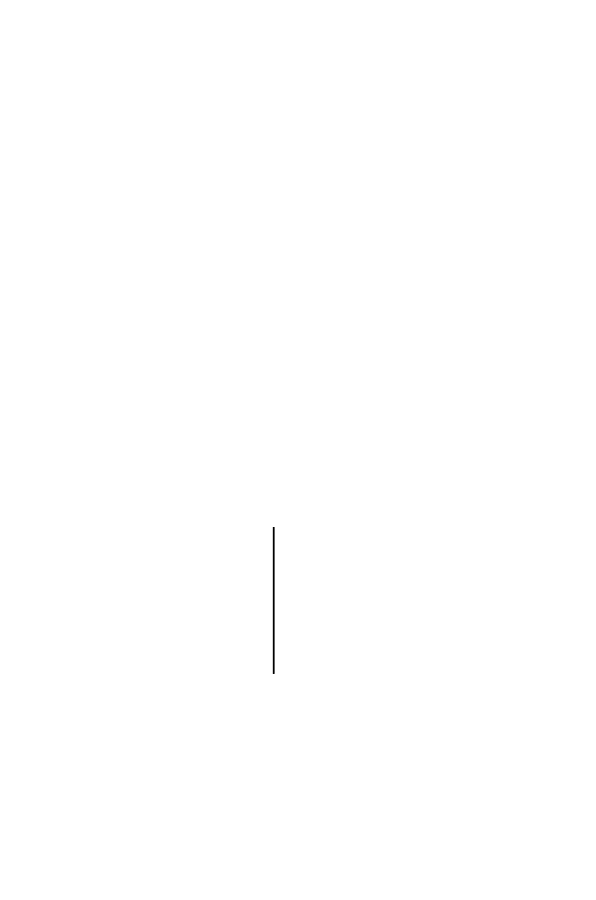

446
14 Comparative Genomics
subunits. One of these is the
α
subunit, which is encoded by
dnaE
and displays
polymerase activity, and another is the
subunit, encoded by
dnaQ
and hav-
ing 3
→
5
exonuclease activity. In
Bacillus subtilis
, the replication polymerase
PolIII
α
contains the domains for polymerase and 3
→
5
exonuclease fused on
a single polypeptide chain. Notice that in both of these examples, each pair
of polypeptides (or domains) functions in the same process (a result of exper-
imental observation). Fusion of these domains into a single polypeptide chain
is predicted to facilitate the process on biochemical grounds. If we reverse the
logic, we can predict that
if two polypeptides
A
i
and
B
i
occur separately in
organism
i
but each is similar to different portions of a larger polypeptide in
organism
j
(i.e., gene
g
j
appears to be a fusion of regions encoding polypep-
tides resembling
A
i
and
B
i
), then
A
i
and
B
i
probably participate in the same
biological process
(Enright et al., 1999). Note that genes
A
i
and
B
i
are not
similar to each other, so their functional assignment does not depend upon
orthology. In addition, appearance of these domains in a single polypeptide
chain, where a degree of interaction will occur, suggests that these domains
also physically interact when they occur on separate polypeptide chains. Tests
of this method using independently annotated genes showed that 32%–68%
of genes associated by domain fusion shared keywords in their annotations
(for yeast and
E. coli
, respectively), while pairs of genes selected at random
shared keywords in 14%–15% of their annotations (Marcotte et al., 1999).
The third method, identification of phylogenetic profiles (Pellegrini et al.,
1999), employs statistical tools similar to those that we used for classification
and clustering. The procedure is, in a sense, the “transpose” of what we
were doing before. Before, we used matrices that looked like the one below to
summarize the properties of OTUs :
characters
OTU
i ii iii iv . . .
n
1
0 1 1 0 . . . 0
2
1 0 1 1 . . . 0
3
0 1 1 0 . . . 0
4
0 1 1 0 . . . 1
·
· · · ·
. . .
·
·
· · · ·
. . .
·
m
1 0 0 0 . . . 0
Instead of using anatomical characters, we could use the presence (1) or
absence (0) of particular proteins
p
1
, p
2
, . . . , p
n
in
m
completely sequenced
genomes (the genomes
must
be completely sequenced) as our characters. At
least some of the
p
i
should be annotated functionally in some model organism.